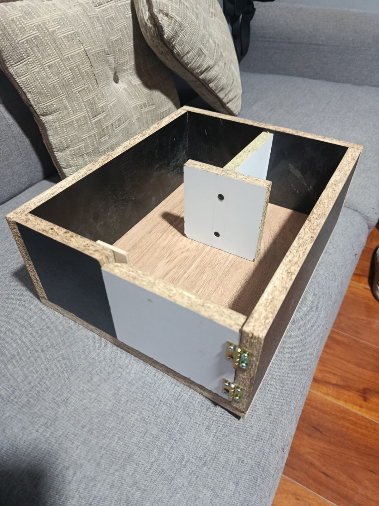
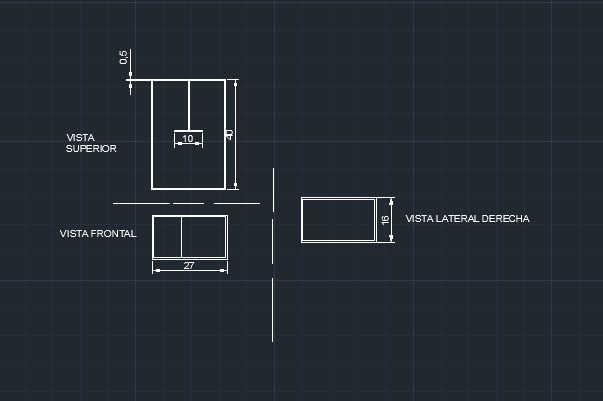
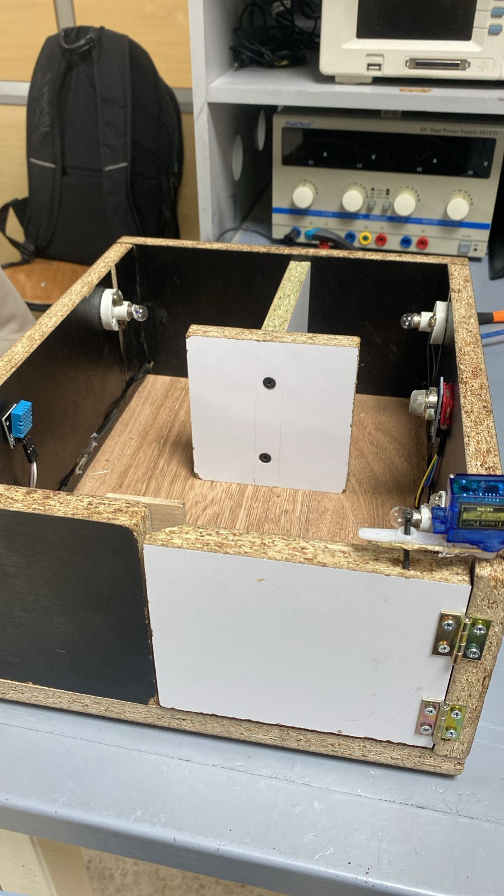

Investigacion
Seleccionar sensores
Seleccionamos los sensores que vamos a implementar en el proyecto y las primeras pruebas, como lo es el sensor de ultadistancia, temperatura. adicionalmente a eso vamos a impelentar los actuadores de servomotores para el mecanismo de las puertas y ventanas. Una idea es utilizar un panel solar para almacenar en un banco de condensadores y tener energia para el circuito

Sensor IR
El sensor IR (infrarrojo) para Arduino detecta objetos o movimiento midiendo la reflexión de la luz infrarroja emitida por un LED. Cuando un objeto se acerca, la señal reflejada es captada por el receptor, permitiendo activar acciones como encender luces o contar objetos.
Sensor temperatura (DHT11)
Un sensor de temperatura mide el calor o frío de un ambiente, objeto o sustancia, convirtiendo ese cambio en una señal eléctrica que puede ser interpretada para conocer la temperatura exacta.
Servomotor (SG90)
Un servomotor es un actuador que permite mover un eje o una pieza a una posición específica con gran precisión, controlando su velocidad y ángulo mediante señales eléctricas.
Sensor de Humo (MQ-6)
El sensor MQ-6 detecta gases inflamables como propano, butano y gas licuado de petróleo (GLP). Funciona midiendo cambios en la resistencia del material sensible al gas, y envía una señal analógica al Arduino para indicar la concentración del gas en el ambiente.
Maqueta Para Pruebas

Maqueta pruebas sensores
Esta maqueta se realizo para hacer las respectivas pruebas de sensores y simulacion para el proyecto.
Esta maqueta esta creada en un material aglomerado (MDF) con bisagras de pulgada (1in)

Maqueta con Sensores y Actuadores
